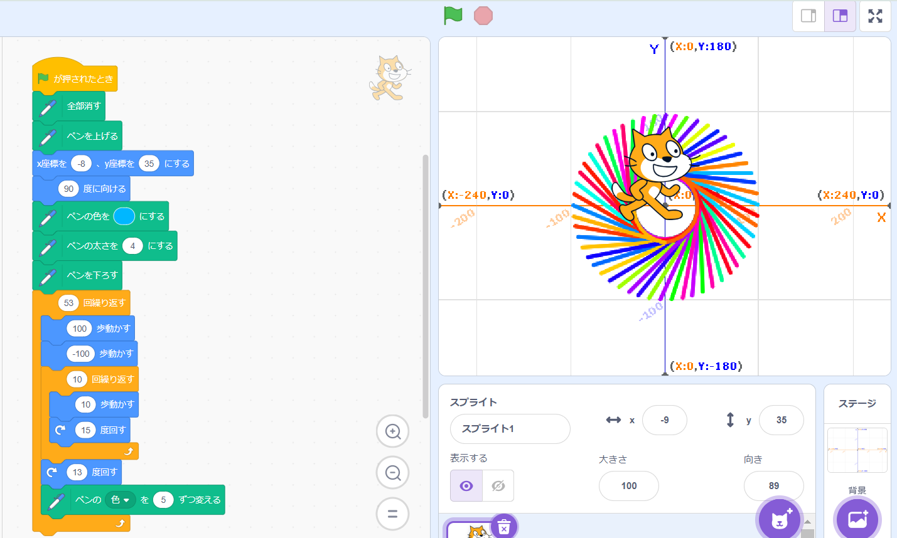
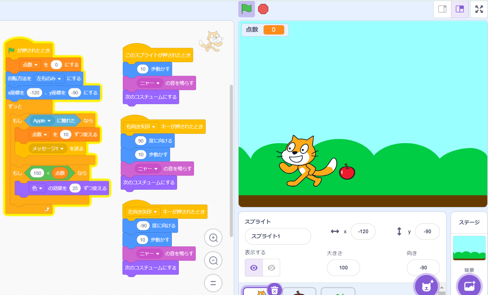

1週目のレポート ： 公大高専１年実習I-1
1b班31番 にいさん
第1週目
1-1 サイエンスアート

1.内容
スクラッチを使って線を書くプログラムを作成した。100歩歩いて100歩下がって，その後10歩歩いて15度右回転を10回繰り返し，13度右回転を53回繰り返すというプログラムを作成した。中心が座標（0,0）になるようにスタートの場所を工夫し，円になるために53回繰り返した。
2.感想
アバターを動かすことで，ラインを引くことができて，様々な模様を描くことができた。 進むだけではなく，後退があることで，作成できる模様の幅が広がることが分かった。
1-2 ゲーム

1.内容
キーボードの右矢印を押したら猫のアバターが右に移動し，左矢印を押したら左に移動し，リンゴを取ると点数が上がっていくプログラムを作成した。リンゴのペースはランダムで変わっていくようにしたので，ゲームが少し難しくなっている。
2.感想
リンゴをキャッチするゲームを作ることができ，ゲームを作るのは難しいと思っていたので，とても楽しみながらプログラミングを作成できた。リンゴが取れなかったら点数が下がるようにしたかったができなかった。またチャレンジしたい。
1-3 ホームページ作成
私のホームページ
1.内容
ないようないよう
2.感想
かんそうかんそう
各ページへのリンク
1週目のレポート
2週目のレポート
3週目のレポート
私のホームページ